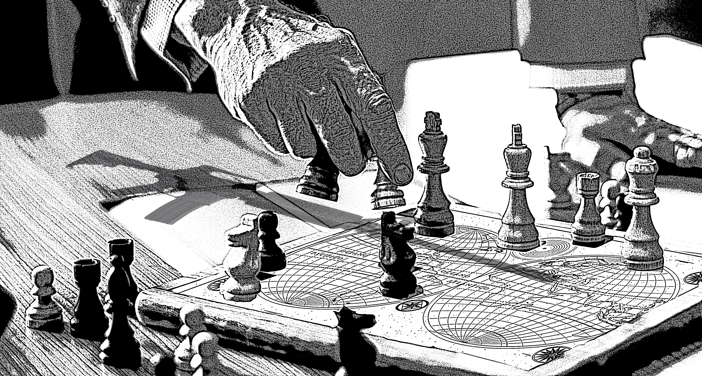

A Revolução Industrial foi um processo de grandes transformações sociais e econômicas que começou na Inglaterra no século XVIII. O modo de produção industrial se espalhou por grande parte do hemisfério Norte durante todo o século XIX e início do século XX. Produzir mercadorias ficou mais barato e acessível, porém trouxe a desorganização da vida rural e estragos ao meio ambiente. O advento da produção em larga escala mecanizada deu início às transformações dos países da Europa e da América do Norte. Estas nações se transformaram em predominantemente industriais e suas populações se concentraram cada vez mais nas cidades. Por isso, a revolução industrial é caracterizada como o processo que levou à substituição das ferramentas pelas máquinas, da energia humana pela energia motriz e do modo de produção doméstico (ou artesanal) pelo sistema fabril.

"Geopolítica é um termo utilizado para designar tanto a prática quanto os estudos das relações e disputas de poder entre Estados e territórios. Esse campo do conhecimento se dedica aos estudos dos conflitos diplomáticos, políticos e territoriais, das crises, da evolução histórica do ordenamento político do espaço mundial, da articulação entre os Estados nacionais e da atuação das organizações internacionais e blocos econômicos. De grande importância para a análise das relações internacionais e do ordenamento territorial em diversas escalas, a geopolítica permite desenvolver uma visão crítica acerca do passado histórico e principalmente dos acontecimentos atuais."
Com o advento da industrialização, a geopolítica mundial sofreria alterações anos mais tarde, isso em virtude do chamado neocolonialismo, caracterizado pelo domínio e exploração dos continentes mais pobres pelas potências do centro do capitalismo. As principais consequências da Revolução Industrial foram as novas relações de trabalho; a consolidação do capitalismo; a industrialização dos países; a expansão do imperialismo; o exodo rural e a urbanização; os avanços nos campos da medicina, do transporte e das telecomunicações; o aumento da capacidade produtiva